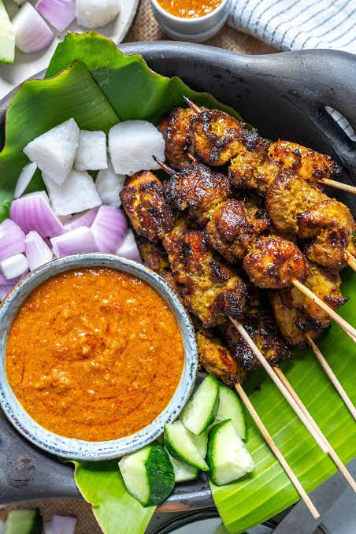

Nasi Lemak
Nasi lemak is a famous Malaysian dish made with coconut rice, sambal, boiled egg, peanuts, anchovies and cucumber. It is often eaten for breakfast.

Satay
Satay is grilled meat served on sticks with peanut sauce. It is popular at night markets, food courts and local restaurants in Kuala Lumpur.

Street Food Culture
Kuala Lumpur has many street food areas where people can enjoy local meals, snacks and drinks. This reflects the city’s multicultural lifestyle.